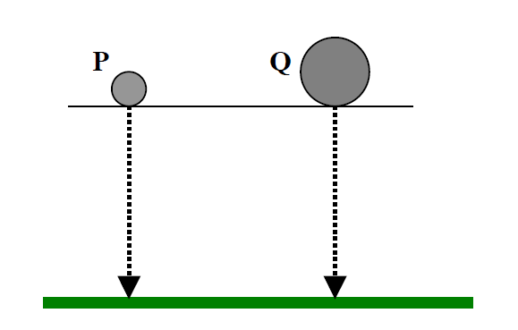
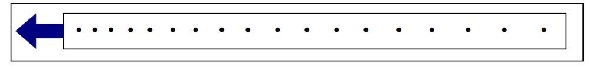
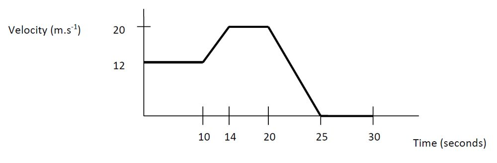
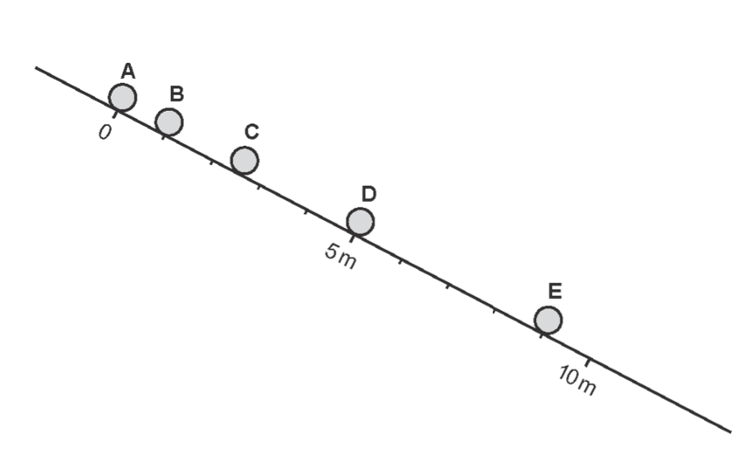
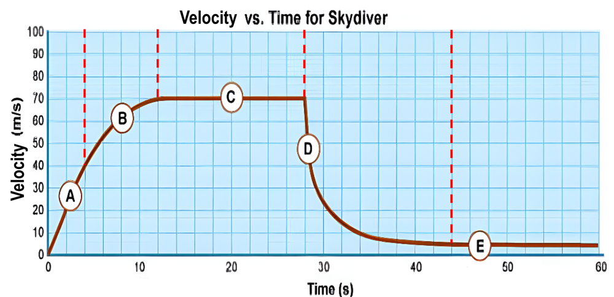

Part A: Multiple choice (15 marks)
A net force of zero
A skydiver falling at terminal velocity
You are driving on a flat road. If you take your foot off the accelerator,
If a force of 100 N acts on a mass of 20 kg, the acceleration will be:
a = F / m = 100 ÷ 20 = 5 m/s2.
Your teacher has just said that your gravitational pull on the Earth is as great as the Earth's pull on you. This is:

Two heavy metal spheres P and Q are dropped at the same time from the same height. P is much smaller than Q. Ignore the effect of air resistance. Which one of the following is the correct observation and possible reason for what happens?
If you walk 200 m in three minutes and twenty seconds, what is your average speed?
3 min 20 s = 200 s, so speed = 200 ÷ 200 = 1 m/s.
A girl standing on a bridge throws a metal sphere vertically downward as hard as she can. Which statement about the acceleration of the sphere after it has left her hand is true? Here "g" is the acceleration due to gravity, 10 m/s2. (Ignore air resistance.)
Once the sphere has left her hand, the only force on it is its weight, so its acceleration is g. The throw gives it a larger starting speed, not a larger acceleration.
Playing a game of tennis with your best friend, you hit a thumping ace that she barely even sees. Which of the following statements is true when your racquet hits the ball?
A car is travelling with constant acceleration along a road. Which one of the following quantities changes by the same amount in equal time intervals?
If you go from a speed of 2 m/s to 10 m/s in 4 s, your acceleration would have been:
a = Δv / Δt = (10 − 2) ÷ 4 = 2 m/s2.
The force that stops us falling to the centre of the Earth is the

The motion of a trolley is recorded on a length of ticker tape attached to the trolley. The tape, shown above, moves in the direction shown by the arrow. What motion could be represented by this length of ticker tape?
The gaps increase steadily, so the trolley has a constant acceleration, which needs a constant net force.
The following graph of a car's motion over 30 seconds applies to Questions 14 and 15.

The car's acceleration between 20 and 25 seconds is
a = (0 − 20) ÷ 5 = −4 m/s2.
The car's displacement over the 30 seconds shown is
Area under the graph: 12 × 10 = 120, plus (12 + 20) ÷ 2 × 4 = 64, plus 20 × 6 = 120, plus ½ × 5 × 20 = 50. Total = 354 m.
Part B: Short answer (25 marks)
Question 1 (4 marks)
The diagram below shows the positions of a ball at exactly 0.5 s intervals as it rolls down a 10 m track. It took 0.5 s to roll from A to B, then another 0.5 s to roll from B to C, and so on.

What is the distance travelled from A to E?
What is the time taken for the ball to travel from A to E?
4 intervals × 0.5 s = 2 s.
Find the average speed of the ball as it travelled from A to E.
9 ÷ 2 = 4.5 m/s.
Explain how the diagram shows that the ball is accelerating.
The distance travelled in each 0.5 s interval increases, so the ball must be accelerating.
Question 2 (9 marks)
The graph below shows the velocity of an 80 kg skydiver who jumps from a hot air balloon. The labels A–E mark sections of the jump; the boundaries of each section are marked by dashed lines.

Calculate how far the skydiver fell in the first four seconds.
Find the area under the graph up to 4 s: ½ × 4 × 40 = 80 m.
During which sections of the jump (A–E) are the forces on the skydiver unbalanced? Write down all relevant sections and explain your reasoning.
Sections A, B and D (1 mark). In these sections the speed of the skydiver changes, so the forces on the skydiver must be unbalanced (1 mark).
At what time (in seconds) does the skydiver open their parachute? Justify your answer.
At 28 seconds (1 mark). The speed of the skydiver drops sharply due to the air resistance produced by the parachute opening (1 mark).
Describe a force diagram for the main forces acting on the skydiver during section C of their jump. Label each force and show their relative sizes.
- Two opposing forces in the vertical direction: weight (FEarth on skydiver) pointing down and air resistance (Fair on skydiver) pointing up (1 mark, 0.5 each).
- Correct labels (1 mark, 0.5 each).
- The two forces are the same size, because in section C the skydiver is at terminal velocity (1 mark).
Question 3 (7 marks)
A 1100 kg car driving at 25 km/h on a main road accelerates to 60 km/h in 4.50 seconds.
What is the weight of the car? Assume that g = 10 m/s2.
W = mg = 1100 × 10 = 11 000 N.
Calculate the acceleration of the car.
Convert to m/s (1 mark): 25 ÷ 3.6 = 6.94 m/s and 60 ÷ 3.6 = 16.67 m/s.
Δv = 16.67 − 6.94 = 9.72 m/s (1 mark).
a = Δv / Δt = 9.72 ÷ 4.50 = 2.16 m/s2 (about 2.17) (1 mark).
What net force was required to achieve the car's acceleration?
Fnet = ma = 1100 × 2.17 ≈ 2386 N. (Consequential marks are given from part b.)
The car brakes suddenly, and a briefcase sitting on the back seat flies forward, hitting the back of the driver's seat. Explain why this happened, using one of Newton's laws.
Newton's first law (the law of inertia) states that an object in motion continues in its state of motion until acted on by an unbalanced force (1 mark). The briefcase was already moving and there was no net force acting on it, so it continued to move after the car stopped, hitting the driver's seat (1 mark).
Question 4 (5 marks)
A 20 g (0.02 kg) bullet is shot out of a rifle barrel. It accelerates for 2.50 milliseconds (0.00250 s). The force on the bullet is 3500 N.
Find the acceleration of the bullet.
a = F / m = 3500 ÷ 0.02 = 175 000 m/s2.
What is the speed of the bullet as it leaves the gun barrel, if the bullet started at rest?
Δv = a × Δt = 175 000 × 0.00250 = 437.5 m/s.
Explain, using one of Newton's laws, why the gun pushes back into the shoulder of the person firing it when the bullet is fired.
Newton's third law: for every action force there is an equal and opposite reaction force (1 mark). When the gun applies a force to the bullet, the bullet applies an equal and opposite force on the gun, which pushes back on the arm and shoulder of the person firing (1 mark).